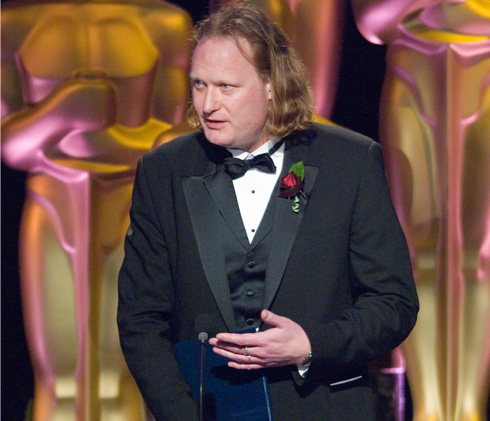

Opening Keynote
Jos Stam
Title: Fluid Dynamics for Entertainment

Abstract: In this talk I will describe my research in computational fluid dynamics targeted to the entertainment industry such as film and games. I will cover the history of Fluid Dynamics and how these equations are solved in practice on a computer. The emphasis is on simple, stable and rapid solutions which yield visually realistic flows. The solver has been used in our MAYA Autodesk animation software and has received a Technical Achievement Award from the Academy of Motion Picture Arts and Sciences in 2007. We will also mention an iOS App called FluidFX and a OSX App called MotionFX. Both apps are based on the same technology. The talk will be accompanied by many live demonstrations and movies.
Bio: Jos Stam was born in the Netherlands and educated in Geneva, Switzerland, where he received dual Bachelor degrees in computer science and pure mathematics. In 1989, Stam moved to Toronto where he completed his Masters and Ph.D. degrees in computer science. After that he pursued postdoctoral studies as a ERCIM fellow at INRIA in France and at VTT in Finland. In 1997 Stam joined the Alias Seattle office as a researcher and stayed there until 2003 to relocate to Alias' main office in Toronto. Stam is now employed with Autodesk as a Senior Research Scientist as part of Autodesk's acquisition of Alias in 2006.
Stam's research spans several areas of computer graphics: natural phenomena, physics-based simulation, rendering and surface modeling, especially subdivision surfaces. His latest creation is a unified dynamics solver called Nucleus, which is embedded in MAYA and has been used in many movies to create special effects. He has published papers in all of these areas in journals and at conferences, most notably at the annual SIGGRAPH conference. In 2005 Stam was awarded one of the most prestigeous awards in computer graphics: the SIGGRAPH Computer Graphics Achievement Award. Stam also won two Technical Achievement Awards from the Academy of Motion Picture Arts and Sciences: in 2005 for his work on subdivision surfaces and in 2007 for his work on fluid dynamics. He was also featured in a January 2008 Wired magazine article.
Banquet Talk
Chris Wyman
Title: Briding the gap: Making research more practical
Abstract: In my former life as an academic, I attended many industry panels at I3D, HPG, and occasionally at other conferences whose aim was to improve cooperation between academics and industry. My take-home lessons amounted to “we need to keep talking about this,” “you’re not doing it right,” and “why don’t you use real scenes?” I never really found these discussions truly illuminating. Over the past few years as I transitioned into industry, I gained some more specific insights into making academic research more practical. I’ll share some specific examples from my work, NVIDIA more broadly, and success cases I’ve seen elsewhere that I hope may help other academics looking to bridge the gap between research and production.
Bio: Chris Wyman is a Senior Research Scientist at NVIDIA’s newly formed real-time rendering research group in Redmond, WA. Prior to moving to Washington, he spent time as a visiting researcher at NVIDIA in Salt Lake City and was an Associate Professor at the University of Iowa for nearly 10 years. His PhD is from the University of Utah. In prior years, he helped organize I3D in various roles: as Conference, Papers, and Posters chairs. He has also served on the SIGGRAPH organizing committee, and in 2013 chaired the SIGGRAPH General Submissions jury.
Closing Keynote
Kun Zhou
Title: Realistic Rendering on the GPU
Abstract: In this talk I will describe our research progress in realistic rendering from the two end of the spectrum of rendering technologies: real-time rendering for interactive applications and movie-quality rendering for feature film production. For real-time rendering, the basic idea is to restrict how the scene can be changed at run time and do some precomputation in the restricted space to accelerate the runtime computation. We show how to apply this idea to achieve interactive rendering of soft shadows, dynamic BRDFs, smokes, and hairs on the GPU. For movie-quality rendering, we demonstrate with our RenderAnts system that it is possible to remap the REYES-based film rendering pipeline onto GPGPU platforms and achieve significant speedups. We further extend the system to effectively support ray tracing effects with carefully designed GPU spatial hierarchies. The system has been deployed in two animation studios and is being used to render a 3D feature film entitled "Blinky Bill".
Bio: Kun Zhou is a Cheung Kong Professor and the Director of the State Key Laboratory of CAD&CG at Zhejiang University. Earlier, he was a Lead Researcher of the Internet Graphics Group at Microsoft Research Asia. He received his BS and PhD degrees from Zhejiang University in 1997 and 2002, respectively. His research interests include geometry processing, photorealistic rendering, computer animation and GPU parallel computing. He has published more than 30 ACM SIGGRAPH/TOG papers and held over 20 patents in these areas.